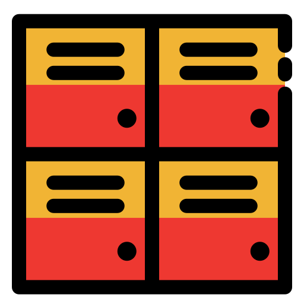

Como Utilizar os Cacifos Est'Aki
Siga os passos simples abaixo para usar nossos cacifos de forma rápida e eficiente!
Passo 1: Cadastrar
Crie uma conta no sistema Est'Aki.

Passo 2: Escolher
Selecione um cacifo próximo da sua localização e escolha o tamanho.

Passo 3: Retirar
Receba o código de acesso, vá até o cacifo e retire a sua encomenda!
Perguntas Frequentes
Você pode acessar sua conta no Est'Aki para recuperar o código de acesso.
A encomenda pode ficar até 48 horas no cacifo. Após isso, será devolvida ao remetente.
Basta acessar sua conta, cancelar o cacifo atual e selecionar um novo.